Welcome to UNCG: Dine-In Specials!
A local blog serving details on local eateries near UNCG!
Each week, we explore a different local restaurant near UNCG.
We feature affordable meals, quick bites, and local favorites!
This week, we are covering SlicesByTony, Takara Noodle, and Tate Street Coffee House!
About SlicesByTony
SlicesByTony is a known local, award-winning pizza restaurant on Tate St, only a walk away from UNCG Campus.
They are known for their delicious, New York style pizzas, pasta dishes, and quick service for our local students.
They provide a warm, welcoming casual dining environment and friendly service that keeps customers coming back for more!
You can find more details in the type, hours, and location sections below.
Restaurant Showcase
Slices By Tony
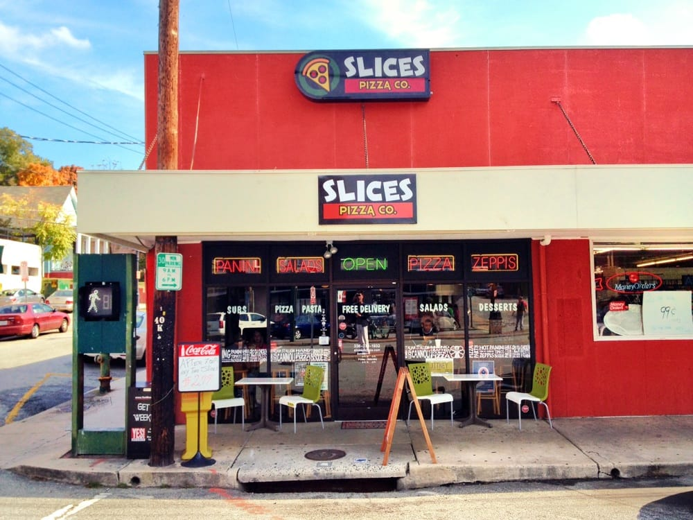
Image source: Yelp
location: 401 tate st, greensboro, nc 27403
hours: 11am - 10pm (mon-sun)
type: Italian restaurant filled with delicious pizza, pasta, and more!
price: $10-20 per person
Slices By Tony is a locally owned. award-winning restaurant near the UNCG campus that specializes in
hand tossed pizza, pasta dishes, and desserts. The restaurant is a popular spot for students
due to its convenient location, menu-variety, and affordable prices.
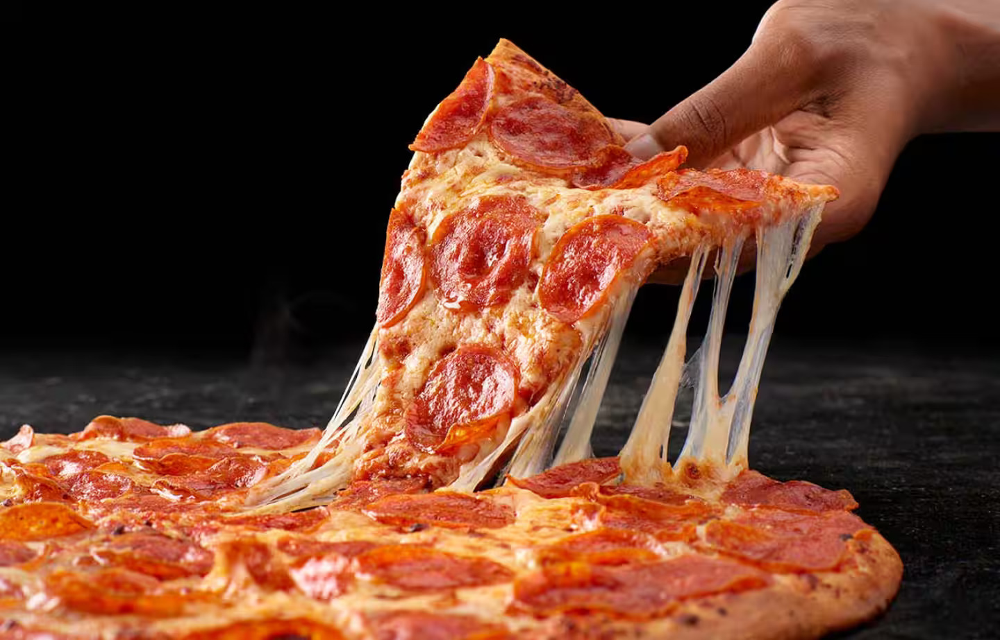
Image source: Papa Johns
Pepperoni Pizza
a classic thin crust pizza topped with pepperoni and mozzarella cheese, baked to perfection.
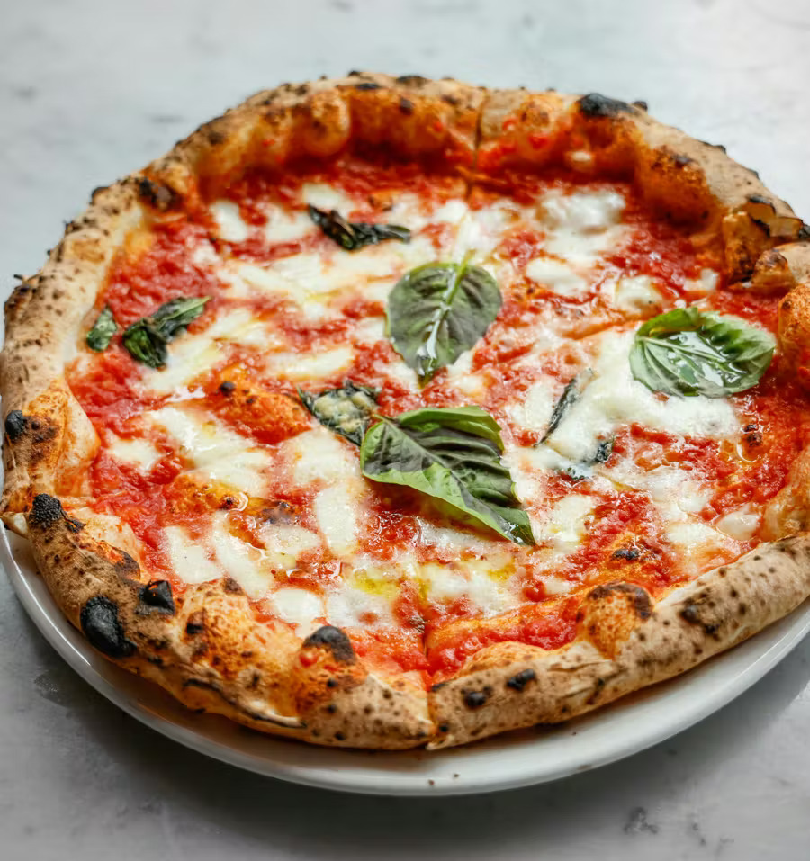
Image source: Eataly
Margherita Pizza
a delicious thin crust pizza topped with tomato sauce, fresh mozzarella, fresh basil, drizzled with olive oil and baked to perfection.
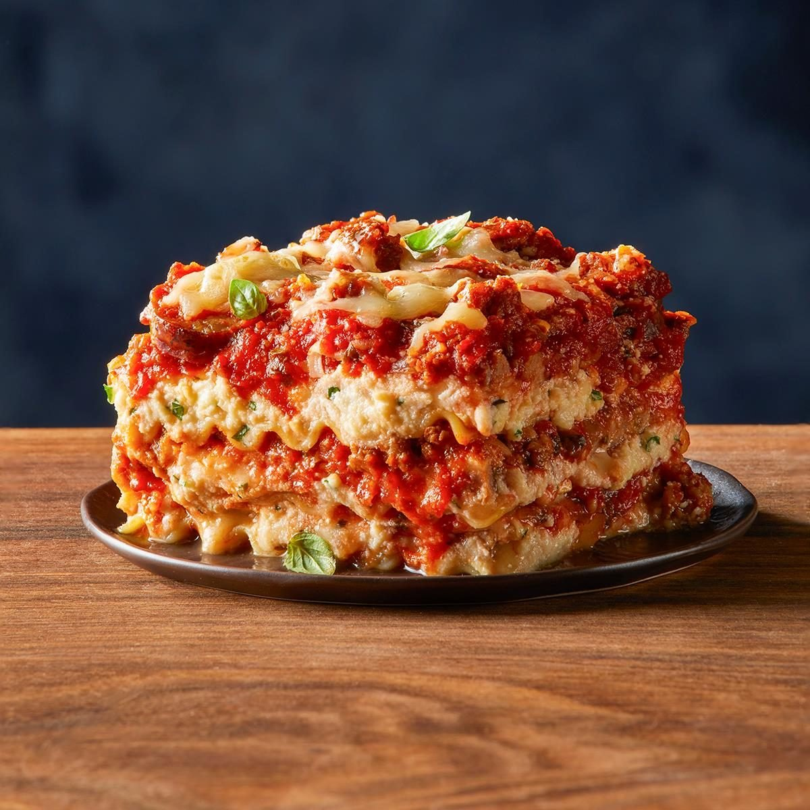
Image source: Taste of Home
Lasagna
a traditional layered pasta dish with cheese and a homemade meat sauce.
Takara Noodle
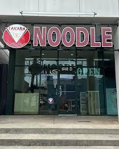
Image source: Facebook
location: 413 tate st, greensboro, nc 27403
hours: 11am - 9pm (mon-sat)
type: Japanese Noodle, Ramen, and other delicacies!
price: $10-20 per person
Takara Noodle is a locally owned restaurant near UNCG campus,
known for its delicious ramen, udon, and other Japanese noodle dishes.
The restaurant is a popular spot for students that enjoy warm atmosphere and fast service,
especially during the colder months or inbetween classes.
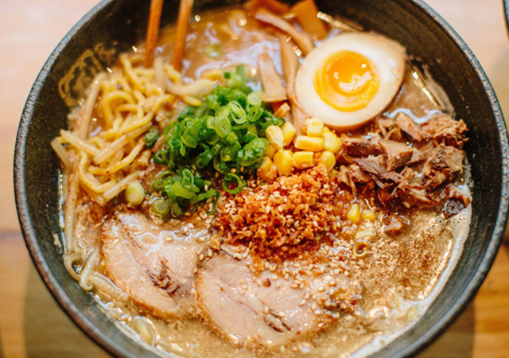
Image source: Takara Noodle
Tonkotsu Ramen
a rich pork bone broth ramen, served with sliced pork, green onions, and soft-boiled egg.
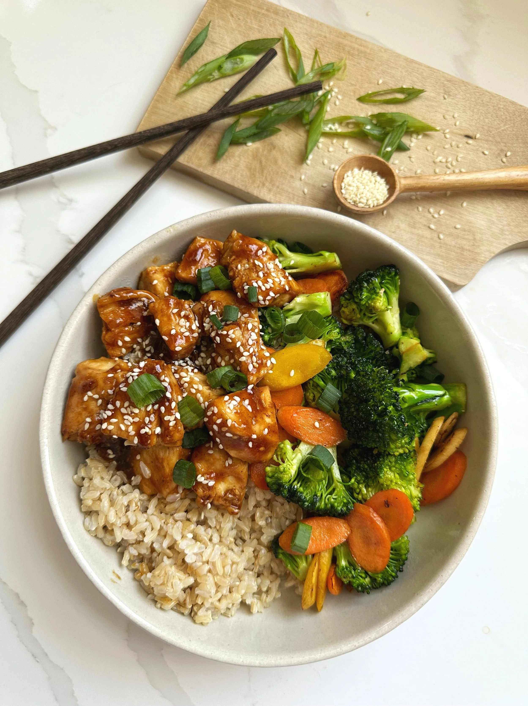
Image source: All Types of Bowls
Chicken Teriyaki
a delicious grilled chicken glazed dish with teriyaki sauce, vegetables, all served over rice.
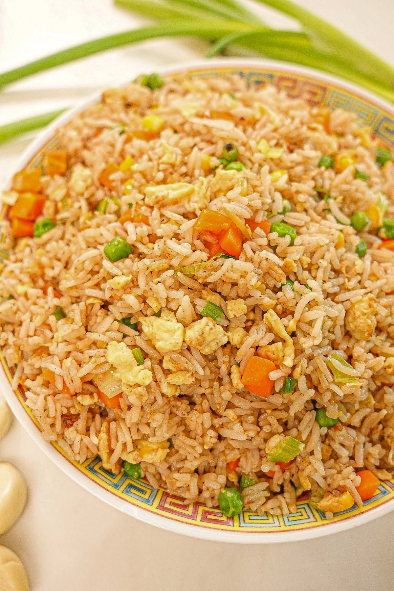
Image source: Instagram
Fried Rice
a traditional stir-fried rice dish with vegetables, an egg, and soy sauce.
Tate Street Coffee House
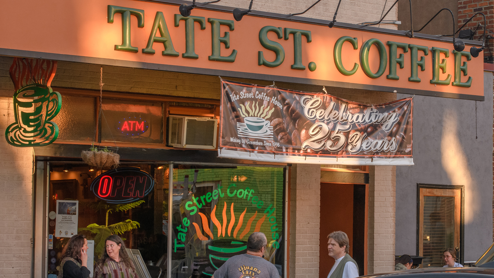
Image source: UNC Greensboro
location: 334 tate st, greensboro, nc 27403
hours: 7am - 9pm (Daily)
type: A local legendary coffee house and bakery
price: $5-12 per person
Tate Street Coffee House is a locally owned, favorite study and hangout spot near UNCG campus.
The coffee house is known for its delicious coffee, pastries, and sandwiches, as well as its cozy atmosphere and friendly service.
The relaxing environment of the coffee house provides a great place to work on assignments while enjoying a quick snack of drink.
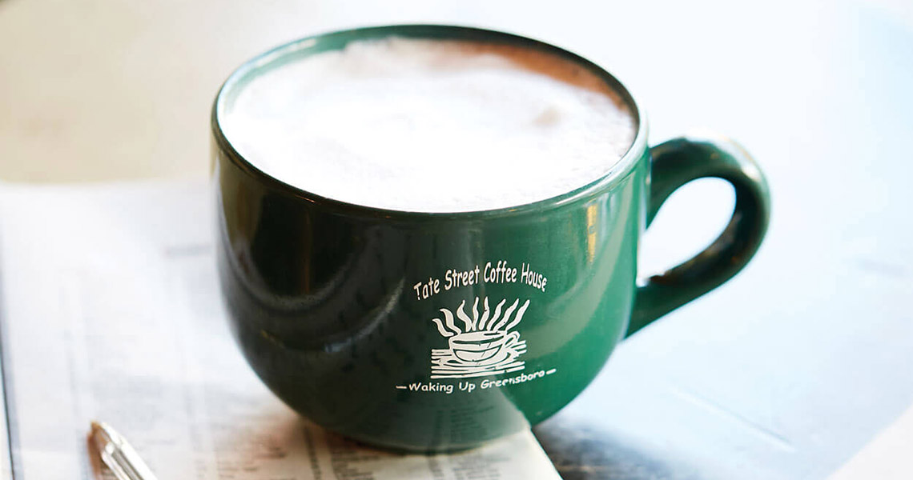
Image source: Our State
Vanilla Latte
a classic vanilla-flavored latte made with espresso, steamed milk, and vanilla syrup.
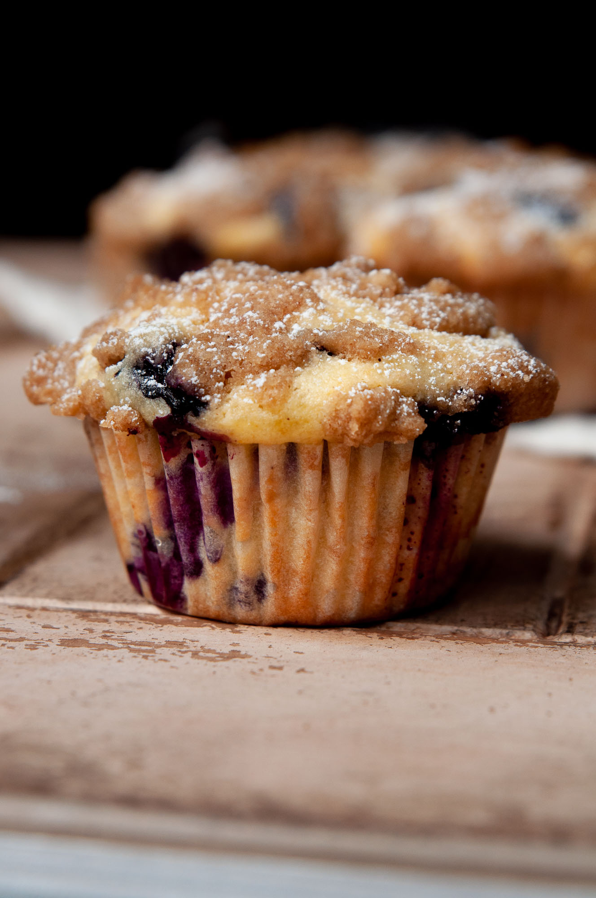
Image source: homecooksnotes
Blueberry Muffin
a fresh baked muffin filled with sweet blueberries.
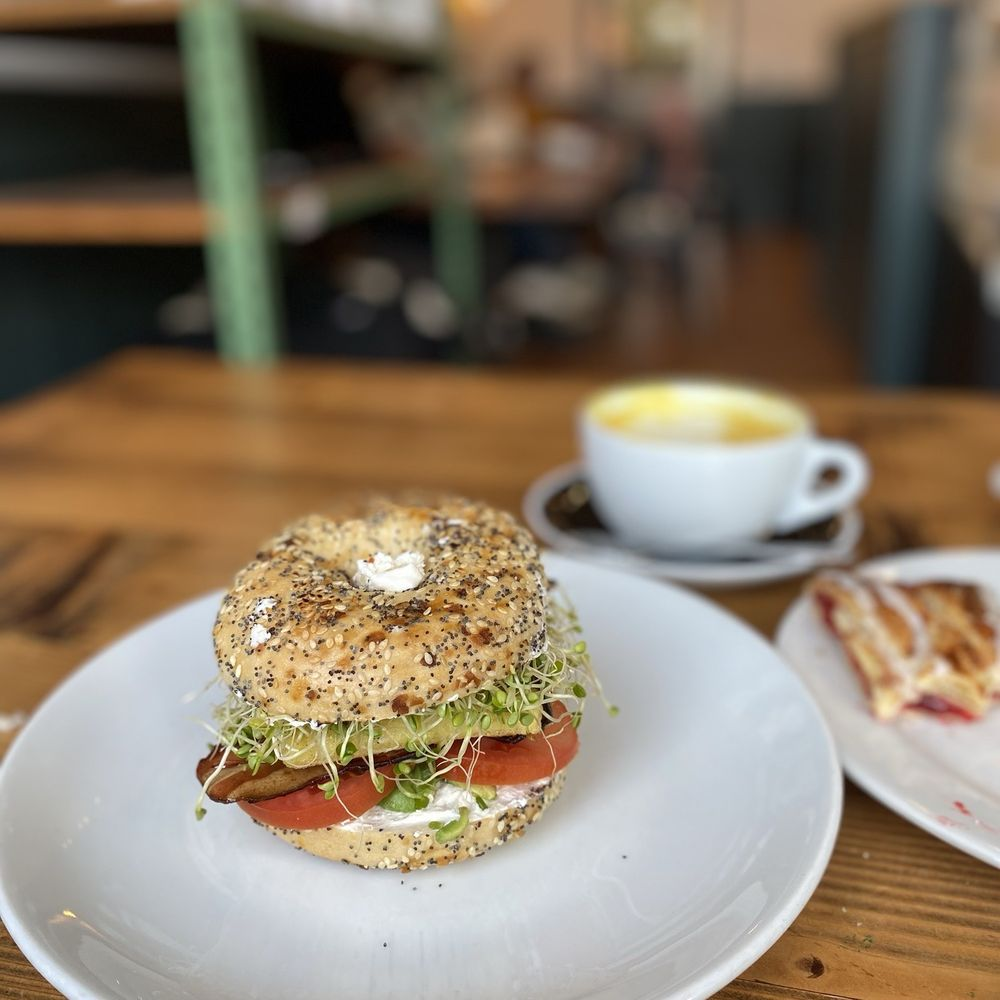
Image source: The Fruity Jem
Breakfast Sandwich
a hearty breakfast sandwich with eggs, cheese, and your choice of meat, served on a toasted roll.